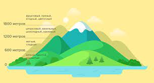

Терруар – это французское слово (буквально – «почва», «грязь»), Терруар — это совокупность климатических факторов и свойств почвы в конкретном регионе. Если простым языком — это климат в котором выращивается кофе. В это понятие включают три основных факторов, которые стабильно влияют на свойства зёрен:
Почва из земли дерево добывает воду и минеральные вещества — основу, из которой влитьях под действием солнечного света производят органические вещества. Те, что предназначены для зёрен, уходят в плоды и формируют их вкус. Соответственно, если почва не задерживает воду, то в засушливый сезон дерево будет страдать от жажды, а зёрна — недополучать вещества, способные сделать их вкус богатым.
Температура: Кофейные деревья не переносят заморозков, даже кратковременное понижение до -1 °C способно убить их. Но и повышение температуры выше 30 °C губительно, выдерживать такую жару деревья могут в течение всего нескольких часов. Поэтому идеальные условия — это тепло днём и прохлада ночью. Границы оптимума 15–30 °C.
Высота: Этот фактор определяет глубину вкуса, поэтому считается наиболее важным. Высокогорный кофе, как правило, обладает богатым букетом, включающим ноты фруктов, пряностей, ягод и цветов. Средние высоты — орехи, ваниль, шоколад, цитрусы. Кофе, выращенный на небольших высотах, имеет мало оттенков вкуса, среди которых преобладают землистые ноты.
Чем выше расположена плантация, тем больше суточный перепад температур, а почвы на больших высотах не бывают болотистыми или чрезмерно сухими. Это и создаёт идеальные условия для выращивания кофе.
Давайте вспомним на каких зёрнах мы работаем.
Мы работаем с двумя обжарщиками:
У TASTY КОФЕ мы берём 2 вида зерна:
У св. Екатерина мы берём Альтернативное зерно, которое идёт на фильтр кофе. (Об этом поговорим на 5 дне обучения)